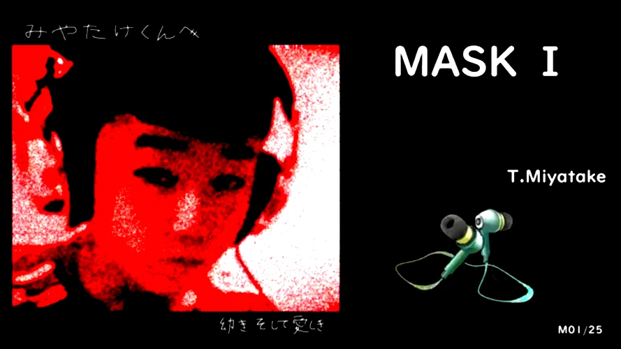

Music: "中学ベスト盤";
Summary
説明を表示...
中学時代に制作・録音したレジェンダリィ・メドレーぢや♪
みなさんのお気に入りの一曲を決めてください！＾＾
最後のトラック（M25）を除き，JHS（ジュニア・ハイスクール・スチューデント）によるオリジナルソングです．
M25は「厳密にはカノン（パッヘルベル）ではない」というご指摘は勘弁してくださいよ〜．やめてくださいよ〜．もうシャレになりませんわ〜．イップスなりわすわ〜．なんなんですか〜．もうやめてくださいよ〜．
制作裏話としては，長尺のメドレー音声を動画ファイルにして公開するにあたって，ファイルサイズ軽減にFFmpegを最大限に活用し，バッチリ効率的に圧縮することができたので，作者は「効率を求めるのはここやねん」と涙液がちょちょぎれてっからよお！
※ベスト盤アルバムタイトル『幼きそして愛しき』は自身の幼い頃の記憶の旅を表すものです．たとえば幼児性愛などとは全く関係がありません．呉々も誤解なきよう．
『中学ベスト盤』 by T.Miyatake
Image Content

Song Content
タイトル付きメドレー動画, 2009-2011
※映像は極端に圧縮されていますが，音声は忠実に継承されていることが確認されています．
Get Properties
Words&Music : T.Miyatake(JHS), 2009-2011;
File-format : mp4;
Source-name : chugaku_miyachan_2009-2011_2026;
Copyright © : SYS. T. Miyatake;
『幼きそして愛しき（中学ベスト盤）メドレームービー』T.Miyatake(JHS), 2009-2011
chugaku_miyachan_2009-2011 Music Clip
ファイル再生について
Google LLC https://www.google.com/ のクラウドストレージサービス，Google Drive に保存されているファイルを参照しています．
サイトにお越しの皆さまに鑑賞いただくことを目的として，どなたでも閲覧・再生可能な状態に設定してあります．
当サイト利用者さまがオンラインサーバ上でファイルを再生してお楽しみいただく以外の，たとえばローカルへの保存などの行為はお控えくださいますよう，お願い申し上げます．